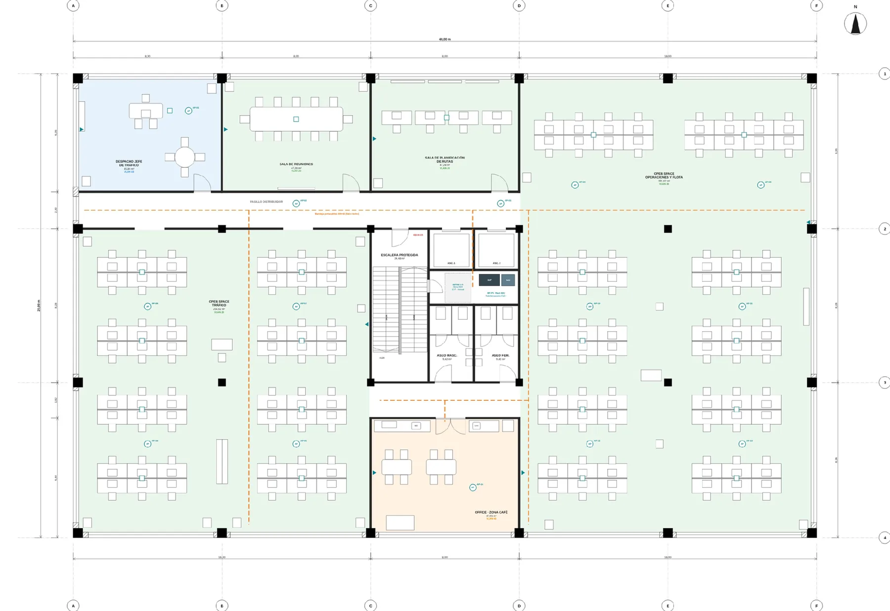

LOGITRANS
Una red. Dos sedes. Quinientos equipos. Todo lo que construimos, funcionando delante tuyo.
Un cliente.
Treinta requisitos.
Infraestructura de red nueva para LogiTrans
Somos una empresa de logística y transporte. Tenemos una oficina central en Barcelona (4 plantas, 350 equipos) y un almacén en Zaragoza (150 equipos). Queremos que funcionen como una sola red.
- Cableado estructurado, racks, SAI y hardware real
- Seis VLAN, IPv4 con VLSM e IPv6
- VPN IPsec entre sedes, OSPF autenticado y NAT
- Seguridad de capa 2 y ACL por departamento
- Active Directory, GPO y RADIUS
- Web corporativa con WAF y área de clientes
- RAID 5, cifrado, firewall y antivirus
- Repositorio con streaming y despliegue de imágenes
- Auditoría propia y plan de mitigación
Rúbrica del Sprint 2
Dos edificios.
Una estrella.
Las dos sedes se cablean en estrella: un armario principal del que sale fibra OM4 a los armarios de planta, y de ahí Cat 6A a cada roseta, sin pasar nunca de 90 m de cobre.
Oficina central · Barcelona One Parc Central · 22@
Almacén · Zaragoza PLAZA · Nave P3
Cada sala,
su VLAN.

El cable dura
veinte años.
Es lo que menos se ve y lo que más cuesta arreglar. Por eso lo elegimos pensando en durabilidad, normativa (LSZH, TIA-568) y margen para subir a 10 Gb sin tocarlo.
Decodificador de etiquetas 2.A2
42 unidades.
Ni una al azar.
Corte de luz
SAI online de doble conversión: la corriente pasa siempre por rectificador e inversor. No hay tiempo de transferencia.
La red, viva.
Doble troncal en cada switch de acceso, cores unidos por EtherChannel LACP, ASA con cuatro patas y dos routers por sede contra cuatro ISP. Ningún cable ni equipo es imprescindible. Elegí origen, destino y servicio, y mandá el paquete.
Cada IP
se explica sola.
Bloques VLSM a escala IPv4
Por Internet,
pero ilegible.
Lo que ve un espía tcpdump
Vecindad OSPF proceso 10 · MD5
Limitaciones de Packet Tracer honestidad
OSPFv3 + IPsec: ipv6 ospf authentication ipsec spi 256 sha1 devuelve % Invalid input. Dejamos MD5 en OSPFv2 y lo documentamos.
OSPFv3 por GRE: no forma vecindad en PT. Entre sedes usamos rutas estáticas IPv6 a los /52 de cada sede, que es equivalente.
En IOS real las dos cosas funcionan.
Para Internet,
somos una IP.
Traducciones en BCN-RT1 show ip nat translations
| Pro | Inside global | Inside local | Outside global |
|---|
BCN-FW · ASA 5506-X 4 interfaces
El ASA de Packet Tracer no guarda estado de TCP: por eso hay reglas explícitas para las respuestas (web, SSH a routers y RADIUS). En un ASA real no hacen falta.
Atacanos.
Dale.
Diez ataques de la tabla de mitigación, lanzables en vivo contra un switch de acceso. Cada defensa es configuración real del Packet Tracer.
BCN-P1-ACC1 · Fa0/1–24 EN ESPERA
logitrans.local
Windows Server 2022 en SRV-AD: dominio, DHCP, DNS con horizonte dividido y NPS. Abrí las herramientas como si estuvieras sentado en el servidor.
Sacá un disco.
Robalo. Da igual.
Pool-RAID · Disco-Datos HEALTHY
Storage Spaces en Parity: datos y paridad repartidos en 3 discos de 5 GB. Hacé clic en un disco para quitarlo, igual que en la prueba.
Robo del disco BitLocker XTS-AES 128
Defensa del host 5.C2
- Firewall de Windows Defender en Dominio, Privado y Público, bloqueo por defecto, vía GPO.
- Solo las reglas necesarias: DNS, SMB, Core Networking y NPS.
- Microsoft Defender: análisis diario 5:27 y semanal los viernes 20:30.
- Logs en \\SRV-AD\Logs sobre R: cifrado. Solo Grupo-Gestio lee, desde la VLAN 99.
- Documentos en el servidor, no en el PC: Redireccion-Docs y unidad S:.
Cinco contenedores.
Una sola puerta.
docker compose · SRV-HV03 10.1.50.12 ↔ 85.100.1.18
Área de clientes · probala logitrans.com/clients
WAF Wordfence Free
Repositorio + Jellyfin sin descargas
FOG · despliegue PXE win10-base
Nos atacamos
primero.
Puertos abiertos y decisión 6.1
Resultado de WPScan con token de API
Diez riesgos.
Diez respuestas.
OWASP Top 10 (2021) aplicado a WordPress y al área de clientes. Pasá el mouse por cada riesgo para ver cómo lo frenamos y en qué punto de la memoria está.
Lo que nos
corrigió el profe.
Y cómo lo resolvimos. Arrastrá cada tarjeta para ver el antes y el después.
0 €
IVA incluido. 855.172 € sin IVA. Modelos reales, con precio de distribuidor.